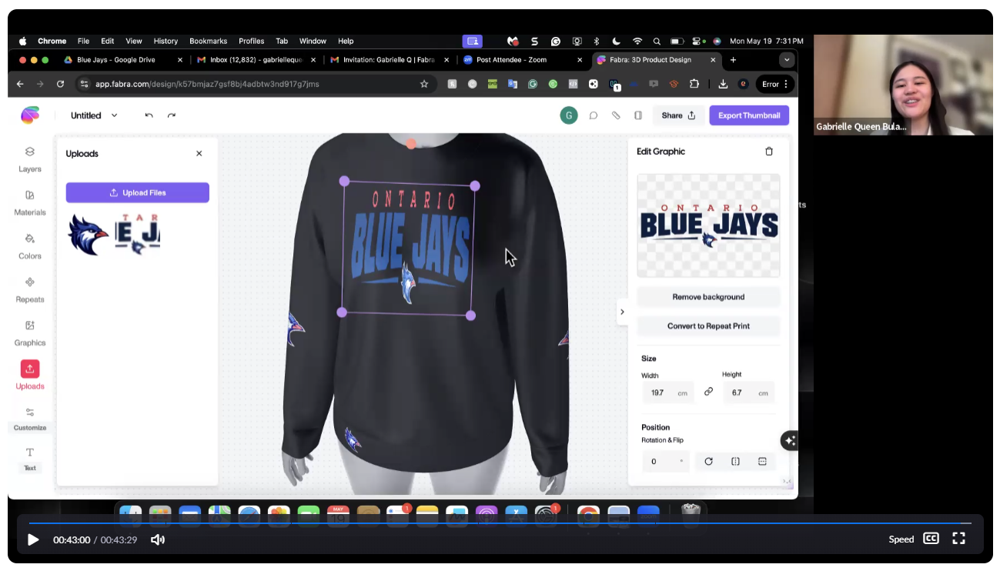
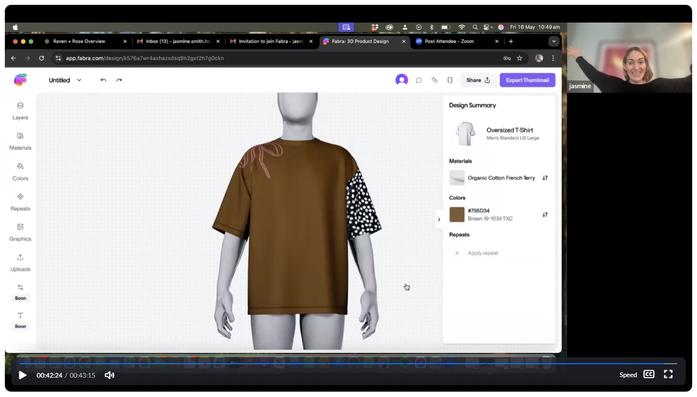
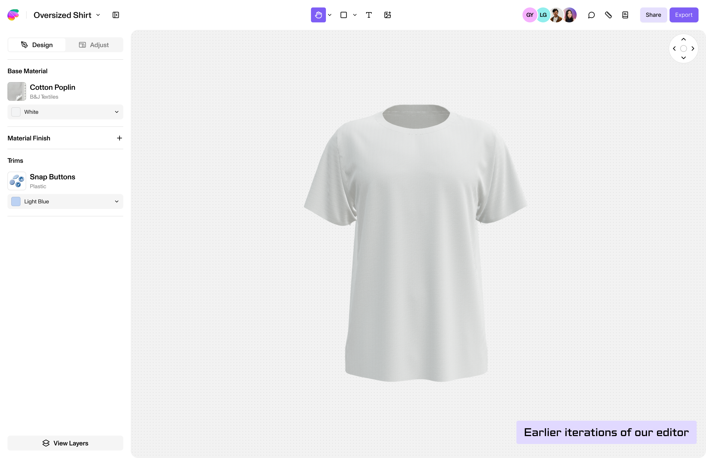

03 — Where simplicity broke down
Approachable didn't always mean production-ready.
That mattered more than I expected.
That gap showed up immediately. In every single interview, without exception, the same three things came up: the ability to customise a garment, add a tech pack and export something production-ready. It didn't matter whether I was talking to a print designer, a brand founder or a hobbyist, the ask was identical.
Fabra could get someone designing in minutes. Getting that design out the door and into production was still a different problem entirely.

The single most requested feature, ahead of everything else, was product customisation: adjusting length, measurements and body shape on an existing garment rather than starting from a fixed template.
We weren't monetising yet at this point, so I used these calls to test willingness to pay instead. Most users told me they'd pay a premium if Fabra could meet these production needs specifically, tech packs and customisation, not just polish on the editor itself. That was the clearest signal I had: people didn't just find Fabra easy, they saw it as something that could genuinely replace part of their production pipeline, if we built the parts that made that real.

One recurring debate with engineering was how our panels should scale as the product became more complex. Early versions relied entirely on the left panel. A one-size-fits-all approach for finding, applying and editing content. We experimented with making this even faster through one-click apply, similar to Canva, where selecting an asset adds it directly to the canvas.

But I wasn’t convinced the model would hold up as Fabra gained more advanced controls. My hypothesis was that discovery and configuration were fundamentally different tasks and should have distinct spaces. Figma provided a useful reference: the left side supports browsing and adding, while the right becomes contextual to whatever is selected.
I proposed the same underlying model for Fabra. The left for search, upload and discovery, and the right for granular configuration.
Engineering wasn't convinced, so rather than relying on instinct, I put the idea to the test with 25 users.
Most participants quickly understood the left-for-discovery, right-for-configuration model, including people with little experience using tools like Figma or Canva.
That gave us confidence that we weren’t simply relying on familiarity with another product. The separation itself created a clearer mental model, while giving Fabra an interface that could scale as more professional controls were introduced.